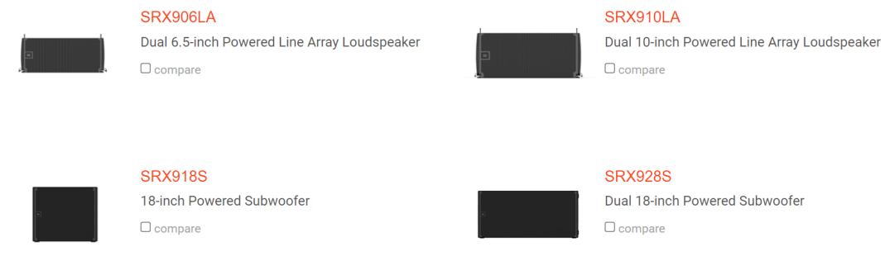

JBL SRX 900
МАЙ, 2022
Cерия SRX900 воплощает передовые принципы производительности аудио продуктов JBL. Это семейство активных линейных массивов и сабвуферов удовлетворяет растущую потребность вдоступных, масштабируемых решениях для профессионального звукоусиления малого и среднего формата. Он идеально подходит для прокатных компаний, стационарных инсталляций и музыкантов, которым требуется идеальное сочетание производительности и мобильности.
Выдающиеся звуковые характеристики серии SRX900 основаны на проверенных временемтехнологиях JBL. Специально разработанные динамики с высокой мощностью обеспечивают чрезвычайно низкий уровень искажений, высокую точность и лучший в своем классе выходной сигнал. Прецизионные волноводы обеспечивают точное управление диаграммой направленности для разборчивости и четкости, не имеющих себе равных в этой категории. Полный набор настраиваемых пользователем DSP и программных инструментов для проектирования и управления обеспечивает ручное управление с компьютера или мобильного устройства. Архитектура корпуса SRX900 продумана до мелочей, чтобы обеспечить простоту использования, быструю установку, минимальное занимаемое пространство и упрощенную транспортировку.
Семейство включает в себя 2х6,5” и 2x10” активных линейных массива, а также 18” и 2x18” активных сабвуфера. Поскольку эти системы масштабируемы и доступны по цене, то можно начать с небольших систем и со временем расширять их. Все модели SRX900 без проблем работают сдругими гастрольными акустическими системами JBL. Независимо от того, расширяете ли вы свой инвентарь или создаете новую систему с нуля, вы можете положиться на активные линейные массивы серии JBL SRX900, которые обеспечат мощность и производительность, ожидаемую от лидера в области профессиональных технологий звукоусиления.
Подробная информация по ссылке.